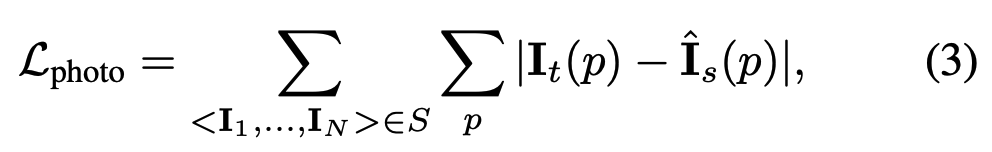

A Survey on Deep Learning for Localization and Mapping
Abstract
In this work,
- we provide a comprehensive survey, and propose a new taxonomy for localization and mapping using deep learning.
- we also discuss the limitations of current models, and indicate possible future directions.
A wide range of topics are covered, from learning odometry estimation, mapping, to global localization and simultaneous localization and mapping (SLAM).
Introduction
Enabling a high level of autonomy for these and other digital agents requires precise and robust localization, and incrementally building and maintaining a world model, with the capability to continuously process new information and adapt to various scenarios.
Such a quest is termed as ‘Spatial Machine Intelligence System (SMIS)’ in our work or recently as Spatial AI.
Why to Study Deep Learning for Localization and Mapping
The problem of localization and mapping have been studied for decades, with a variety of intricate hand-designed models and algorithms being developed, for example, odometry estimation (including visual odometry, visual-inertial odometry and LIDAR odometry), image-based localization, place recogonition, SLAM, and structure from motion (SfM).
The advantages of learning based methods are three-fold:
- First of all, learning methods can leverage highly expressive deep neural network as an universal approximator, and automatically discover features relevant to task.
- Secondly, learning methods allow spatial machine intelligence systems to learn from past experience, and actively exploit new information.
- The third benefit is its capability of fully exploiting the increasing amount of sensor data and computational power.
Taxonomy of Existing Approaches
We provide a new taxonomy of existing deep learning approaches, relevant to localization and mapping, to connect the fields of robotics, computer vision and machine learning. Broadly, they can be categorized into odometry estimation, mapping, global localization and SLAM, as illustrated by the taxonomy shown in Figure 2.
Odometry Estimation
It continuously tracks self-motion, and is followed by a process to integrate these pose changes with respect to an initial state to derive global pose, in terms of position and orientation. This is widely known as the so-called dead reckoning psolution.
To this end, deep learning is applied to model the motion dynamics in an end-to-end fashion or extract useful features to support a pre-built system in a hybrid way.
Mapping
Mapping can be used to provide environment information for human operators and high-level robot tasks, constrain the error drifts of odometry estimation, and retrieve the inquiry observation for global localization.
Deep learning is leveraged as a useful tool to discover scene geometry and semantics from high-dimensional raw data for mapping.
Global Localization
This is achieved by matching the inquiry input data with a pre-built 2D or 3D map, other spatial references, or a scene that has been visited before.
Deep learning is used to tackle the tricky data association problem that is complicated by the changes in views, illumination, weather and scene dynamics, between the inquiry data and map.
Simultaneous Localization and Mapping (SLAM)
Except these above-mentioned modules, several other SLAM modules perform to ensure the consistency of the entire system as follows:
- local optimization ensures the local consistency of camera motion and scene geometry;
- global optimization aims to constrain the drift of global trajectories, and in a global scale;
- keyframe detection is used in keyframe-based SLAM to enable more efficient inference, while system error drifts can be mitigated by global optimization, once a loop closure is detected by loop-closure detection;
- uncertainty estimation provides a metric of belief in the learned poses and mapping, critical to probabilistic sensor fusion and back-end optimization in SLAM systems.
Odometry Estimation
We begin with odometry estimation, which continuously tracks camera ego-motion and produces relative poses. Global trajectories are reconstructed by integrating these relative poses, given an initial state, and thus it is critical to keep motion transformation estimates accurate enough to ensure high-prevision localization in a global scale.
Visual Odometry
Visual odometry (VO) estimates the ego-motion of a camera, and integrates the relative motion between images into global poses.
Supervised Learning of VO
We start with the introduction of supervised VO, one of the most predominant approaches to learning-based odometry, by training a deep neural network model on labelled datasets to construct a mapping function from consecutive images to motion transformations directly, instead of exploiting the geometric structures of images as in conventional VO systems.
DeepVO
DeepVO utilizes a combination of convolutional neural network (ConvNet) and recurrent neural network (RNN) to enable end-to-end learning of visual odometry.
The framework of DeepVO becomes a typical choice in realizing supervised learning of VO, due to its specialization in end-to-end learning.
Figure 4(a) shows the architecture of this RNN+ConvNet based VO system, which extracts visual features from pairs of images via a ConvNet, and passes features through RNNs to model the temporal correlation of features.
Using a FlowNet based encoder can be regarded as introducing the prior knowledge of optical flow into the learning process, and potentially prevents DeepVO from being overfitted to the training datasets.
The recurrent model summarizes the history information into its hidden states, so that the output is inferred from sensor observation.
To recover the optimal parameters \(\boldsymbol{\theta}^*\) of framework, the optimization target is to minimize the Mean Square Error (MSE) of the estimated translations \(\hat{\textbf{p}} \in \mathbb{R}^3\) and euler angle based rotations \(\hat{\boldsymbol{\phi}} \in \mathbb{R}^3\):
DeepVO reports impressive results on estimating the pose of driving vehicles, even in previously unseen scenarios. In the experiment on the KITTI odometry dataset, this data-driven solution outperforms conventional representative monocular VO, e.g. VISO2 and ORB-SLAM (without loop closure).
This is because deep neural network can implicitly learn and maintain the global scale from large collection of images, which can be viewed as learning from past experience to predict current scale metric.
Unsupervised Learning of VO
This has been achieved in a self-supervised framework that jointly learns depth and camera ego-motion from video sequences, by utilizing view synthesis as a supervisory signal.
As shown in Figure 4(b),
The entire framework takes consecutive images as input, and the supervision signal is based on novel view synthesis - given a source image \(\textbf{I}_s\), the view synthesis task is to generate a synthetic target image \(\textbf{I}_t\). A pixel of source image \(\textbf{I}_s(p_s)\) is projected onto a target view \(\textbf{I}_t(p_t)\) via:
where \(\textbf{K}\) is the camera’s intrinsic matrix, \(\textbf{T}_{t→s}\) denotes the camera motion matrix from target frame to source frame, and \(\textbf{D}_t(p_t)\) denotes the per-pixel depth maps in the target frame.

where \(p\) denotes pixel coordinates, \(\textbf{I}_t\) is the target image, and \(\hat{\textbf{I}}_s\) is the synthetic target image generated from the source image \(\textbf{I}_s\).
However, there are basically two main problems that remained unsolved in the original work:
- this monocular image based approach is not able to provide pose estimates in a consistent global scale. Due to the scale ambiguity, no physically meaningful global trajectory can be reconstructed, limiting its real use.
- the photometric loss assumes that the scene is static and without camera occlusions.
Hybrid VO
Based on mature geometric theory, they use a deep neural network to expressively replace parts of a geometry model.
A straightforward way is to incorporate the learned depth estimates into a conventional visual odometry algorithm to recover the absolute scale metric of poses.
Combining the benefits from both geometric theory and deep learning, hybrid models are normally more accurate than end-to-end VO at this stage.